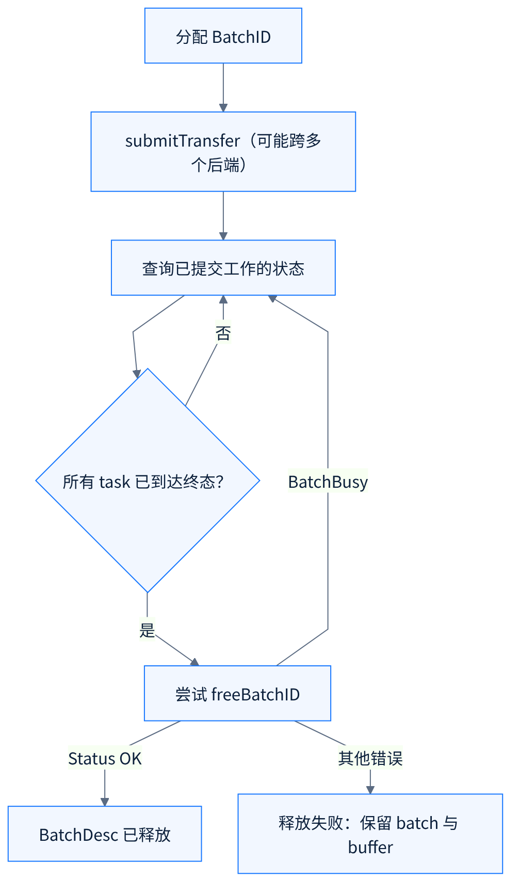

摘要：一个 batch 跨两个后端提交，第一个后端已接收，第二个提交失败。哪些工作还在进行？调用方最早什么时候能释放资源？
调用一次传输接口，收到成功返回，随后释放源 buffer。
这段逻辑看起来很自然，但如果接口采用异步执行，它就可能过早释放仍被后端使用的数据。
理解 Transfer Engine，首先要区分两种成功：
请求被接受，与传输已经完成。
一个 batch 里有三种层次
调用方通常以 batch 管理一组工作。
内部可能包含多个 task，而一个 task 又可能拆成多个 slice。具体后端负责把这些片段交给网络或设备执行。

图注：层级只表示组织关系；不同后端对 slice 的拆分与完成聚合方式可能不同。 这种分层让接口能够批量组织请求，也让后端有机会根据地址、长度和路径进行调度。但它同时意味着：单个片段完成，不代表整个请求结束；某个请求失败，也不代表批次内所有工作已经停止。
一个跨两个后端的 batch
假设一个 batch 有 3 个请求，提交时按 transport 分成两组：前两个请求进入后端 A，第三个请求进入后端 B。
MultiTransport::submitTransfer 先按请求建立 task，再按 transport 分组提交。后端 A 接受了前两个请求的工作；后端 B 在提交第三个请求时返回错误。
这里有两个时间点不能合并：
- 后端 A 接受工作：task 已经进入后端队列或设备路径，但不代表数据传输完成。
- 后端 B 返回错误：这是提交阶段的错误，不代表后端 A 已经接受的工作被撤销。
submitTransfer 不会因为后端 B 失败就停止处理其他分组，也不会回头取消后端 A 已接收的 task。它继续尝试剩余分组，最后返回一个非 OK 状态。
错误什么时候返回，调用方还能看到什么
错误是在遍历完各 transport 分组后聚合返回的，不是在第一个后端失败的那一刻立刻返回。因此，调用方收到错误时，其他分组可能已经被提交。
调用方能观察到的状态有粒度限制：
getTransferStatus(batch_id, task_id)按 task 返回WAITING、COMPLETED、FAILED、TIMEOUT和transferred_bytes；getBatchTransferStatus把多个 task 聚合成WAITING、COMPLETED、FAILED。
这些不是每个 WR 的中间状态。调用方可以看到 task 级别是否到达终态，但不能据此推断某个具体设备操作何时停止。
最早什么时候可以释放
释放条件比"接口返回错误"更严格：freeBatchID 遍历 batch 的 task，只有所有 task 的 is_finished 都为真，才删除 BatchDesc 并返回 Status::OK；否则返回 Status::BatchBusy，消息是 BatchID cannot be freed until all tasks are done。
BatchBusy 只表示"还有工作没结束"，不是另一种完成状态。

图注：BatchBusy 只表示仍有 task 未完成；只有 freeBatchID 返回 OK 才表示 BatchDesc 已释放。其他错误是失败或待处理结果，不能连到"已回收"。源码没有为调用方提供自动重试保证。 因此，最早的安全释放点是：所有已提交 task 都到达终态，且 freeBatchID 返回 OK。如果返回 BatchBusy 或其他错误，batch 仍然存在，调用方还要继续管理它。
三种生命周期落到这条路径
请求描述、数据 buffer、batch 资源的生命周期，不一定完全相同。仍以这个跨后端的 batch 为例：
- 请求描述：task 里的
request指向调用方传入的TransferRequest向量元素（task.request = &entries[i]），不是深拷贝。getTransferStatus仍会通过该指针读取请求长度，所以调用方必须让该向量在原位保持有效，直到 batch 被释放。后端 B 提交失败，不会让这个要求消失。 - 数据 buffer：
Slice保存本地地址、长度和远端地址；本地 buffer 必须保持注册且不被释放，直到传输完成。后端 A 已接收的工作可能仍会访问它，不能因为整体返回错误就提前释放。 - BatchID：类型是
uint64_t；MultiTransport把新建的BatchDesc*转成这个整数返回，freeBatchID再转回指针。调用方只能把它当不透明句柄。只有freeBatchID返回OK才删除BatchDesc；返回BatchBusy或其他错误时，batch 仍然存在。
这三个对象不一定同时释放。释放 batch 只处理 batch 资源；数据 buffer 是否还能被后端访问，要单独判断。数据到达也不代表请求描述可以立刻废弃。
错误已报告，设备可能仍在访问
接口返回错误，说明调用方已经知道"这次提交没有全部成功"。它不说明后端 A 已经停止访问请求描述或数据 buffer。
读代码时，应追踪后端是否持有引用或指针，以及最后一次可能访问发生在什么时候。这也是为什么传输层问题经常表现为偶现错误：正常情况下工作结束得快，错误路径或压力场景却会暴露过早释放。
下一篇继续向下，看看 RDMA 如何把这些传输片段变成 WR，并从 CQE 中获得完成结果。
源码延伸：原系列篇5；allocateBatchID、submitTransfer、状态查询与 freeBatchID。版本基线为 v0.3.13.post1。
- TransferEngine::freeBatchID · Status::BatchBusy · BatchID 类型
- MultiTransport::submitTransfer · MultiTransport::freeBatchID
- MultiTransport::getBatchTransferStatus
[源码解析版](../../05-transfer-engine-task-lifecycle.md) · [系列目录与排版说明](README.md)
[上一篇](../05-source-reading.md) · [下一篇](07-rdma-data-path.md)